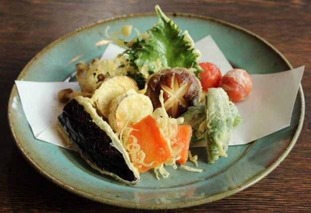
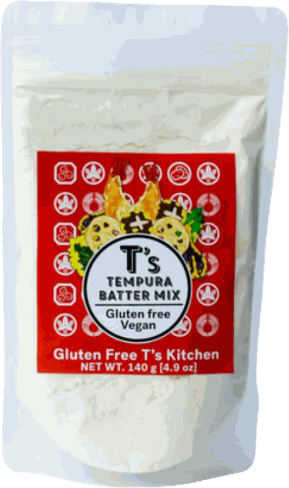

T'sの商品
T'sてんぷら粉 Tempura Batter Mix
原材料 仮
- 米粉
- 馬鈴薯
- ひよこ豆粉
28品目アレルゲン不使用内容量 140g
販売は店頭のみ買えるお店お取り扱いをご希望の事業者様へ
T'sの商品

てんぷら粉について
無添加、グルテンフリー、ヴィーガン、ハラールなど様々な食の多様化に対応しています。
小麦由来の天ぷら粉に比べ、吸油量が約40%少なくなります。 仮
作り方 仮
- 粉70gに、油15gと水または炭酸水60〜70mlを加えて混ぜます。
- 具材に衣をつけ、170℃以上の油で揚げます。
- 塩か醤油でどうぞ。
衣に抹茶、カレー粉、ゴマ、チーズ、ゆかり、青のり、コーンフレーク等、味をつけたり、粉だけを直接、具材にまぶして、揚げることも出来ます。

- 内容量
- 140g
- 原材料
- 米粉、馬鈴薯、ひよこ豆粉 仮
- アレルギー
- 28品目アレルゲン不使用
- 賞味期限
- 1年
- ほか
- ソイフリー。化学調味料・保存料・人工香料・人工甘味料・人工着色料不使用。遺伝子組み換えをしていません。
- PL保険
- 加入済

T'sホットソース（オリジナル） T's HOT SAUCE ORIGINAL
野菜の旨みを最大限に活かした無添加万能調味料。
餃子・サラダ・ヴィーガン寿司・パスタなどに。
無添加・グルテンフリー・ヴィーガン内容量 160g
原材料・アレルギー表記は確認中です 仮
たこ焼き粉・唐揚げ粉
詳しい情報は確認中 仮

たこ焼き粉
28品目アレルゲン不使用内容量 246g
販売状況は確認中です。 仮
唐揚げ粉
28品目アレルゲンフリー からあげ粉
販売状況は確認中です。 仮
販売は店頭のみ
在庫は各店にお電話でお問い合わせください。 仮
- 原宿店渋谷区神宮前4-28-14 B1F03-6812-9222
- 六本木店港区六本木7-8-5 2F03-6874-7719
- 上野広小路店千代田区外神田5-3-303-5826-4548
お取り扱いをご希望の事業者様へ
T'sの商品を取り扱いたい事業者様を募集しています。
- てんぷら粉
- 業務用サイズの販売が可能です。
- ホットソース
- ミニマム発注数 36個 仮
賞味期限 14か月 仮 - PL保険
- 加入済
- ご相談の流れ
- お問い合わせフォームで「卸売・お取り扱い」を選んでお送りください。担当者からご連絡します。 仮